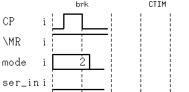

Break vectors
The Timing Diagram can show up to seven break vectors.
When the test routine executes a sequencer instruction that generates break vectors, they are displayed in the Timing Diagram in the same way as test cycles. Each break vector is marked with brk on the transition info line (see the figure below).
When the cursor or the marker are positioned on a break vector cycle, the DevCyc and the Vector fields of the Timing Diagram both display BREAK.

Functional changes
- Introduced before SmarTest 6.3.2